Independent in spirit. Connected by art.
Let life beinspiring.
A meeting place for contemporary art,
design and the poetry of everyday life.
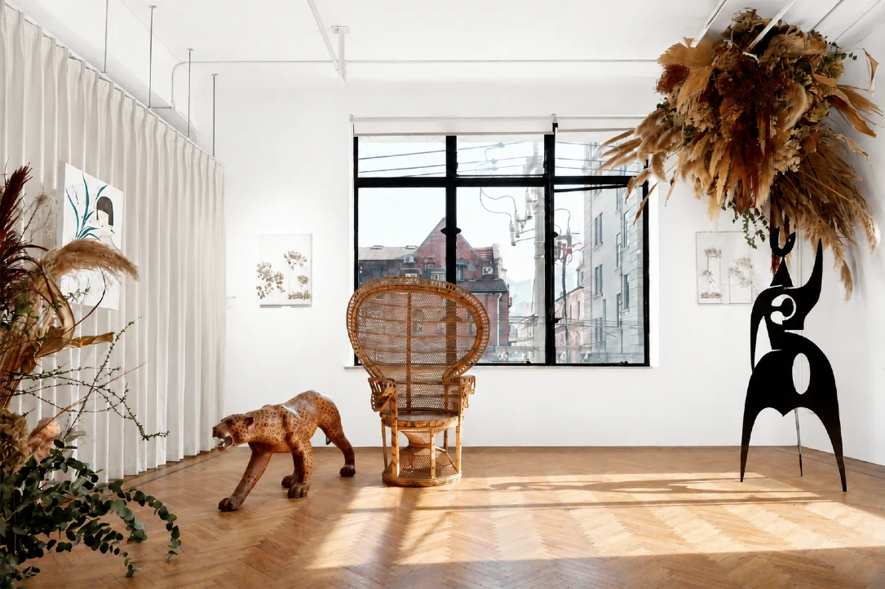
ART, IN DIALOGUE WITH LIFE01 / A spirit of free flow
Between art and life,
there is always a connection.
Founded in Shanghai in 2018, The Parrot explores what happens when contemporary art, nature and design meet. Across exhibitions, heritage spaces and public programmes, we create room for new ways of seeing.
02 / The evolving archive
Selected work.
Ideas take shape.
Conversations begin.
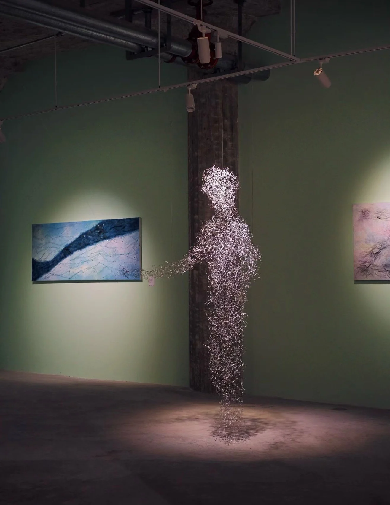
Garden of All Things
万物花园Spiritual Presence
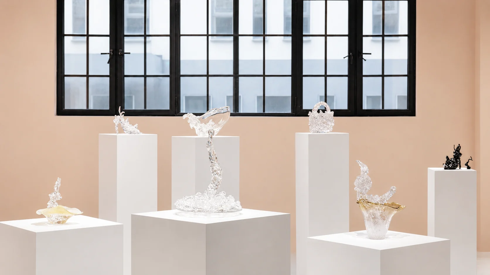
Where Light Falls
光落之境Spiritual Presence
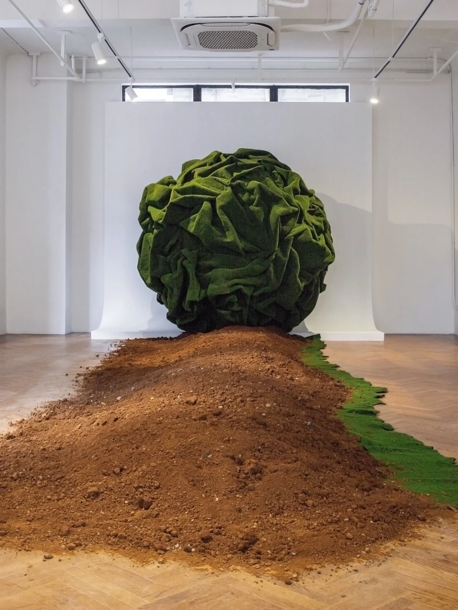
Spring Renewal II
春焕ⅡSpiritual Presence
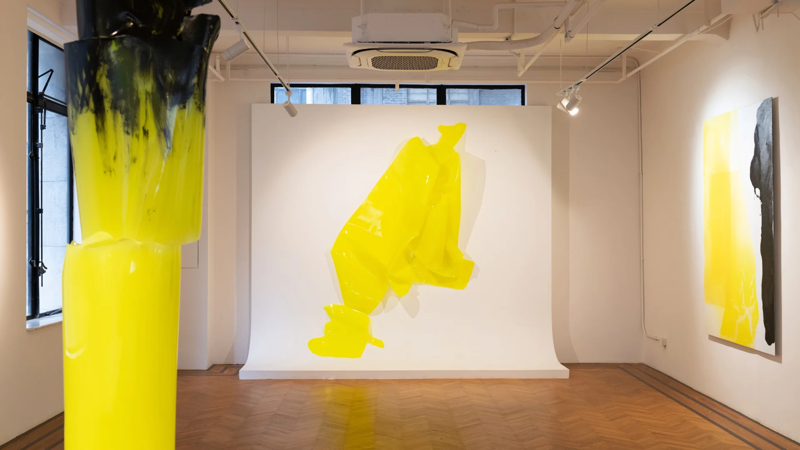
Light Across Traces
越过痕迹的光Spiritual Presence
Garden of All Things
万物花园Spiritual Presence
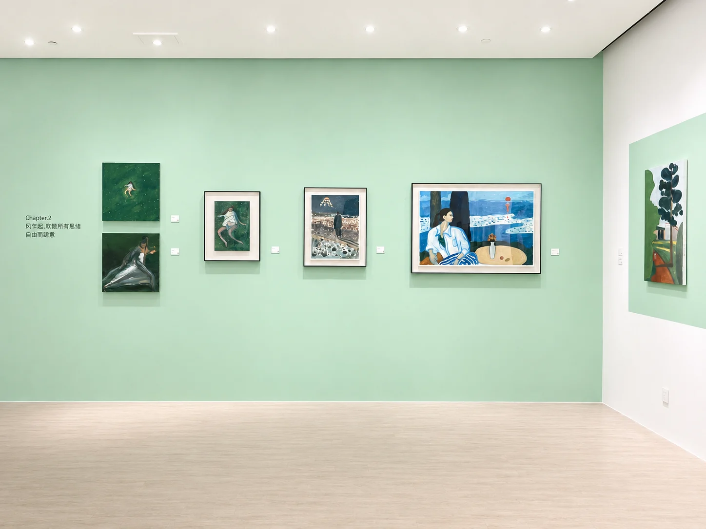
Between Light and Wind
光与风之间Exhibition
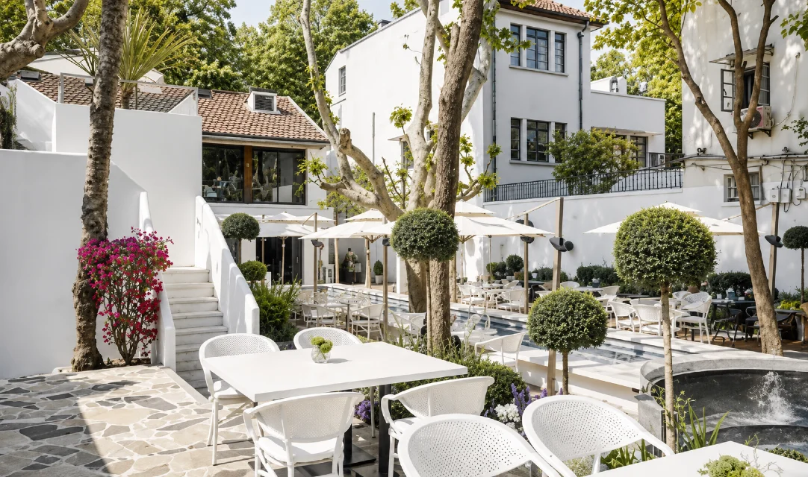
Spaces, reawakened
城市更新Art, architecture & everyday life
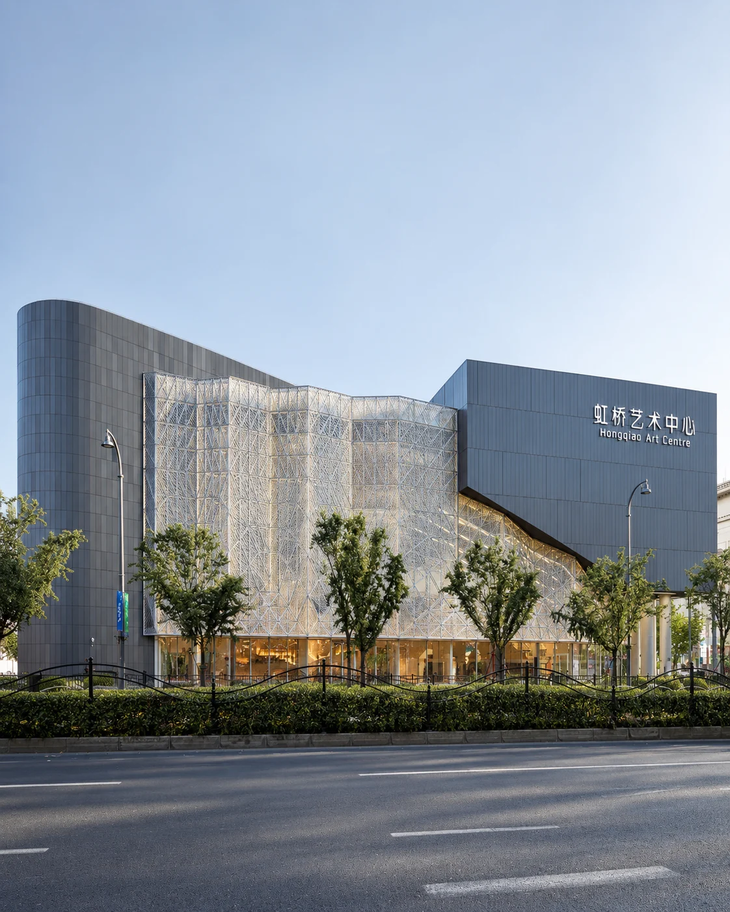
Hongqiao Art Centre
上海虹桥艺术中心Public space & cultural exchange
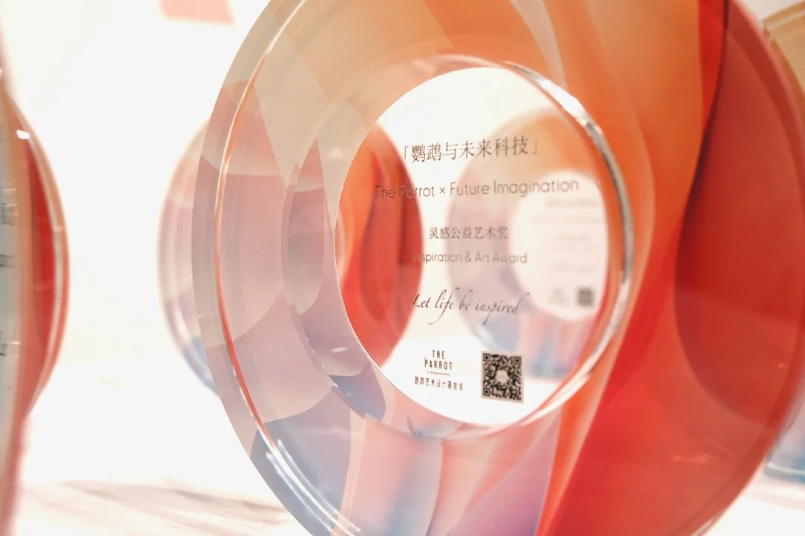
Parrot & Future Technology
鹦鹉与未来科技Art education & public benefit
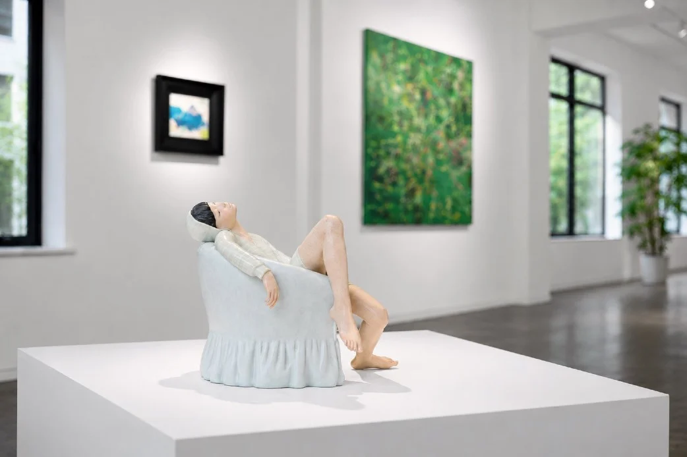
The Parrot Collection
鹦鹉馆藏Art in lasting conversation
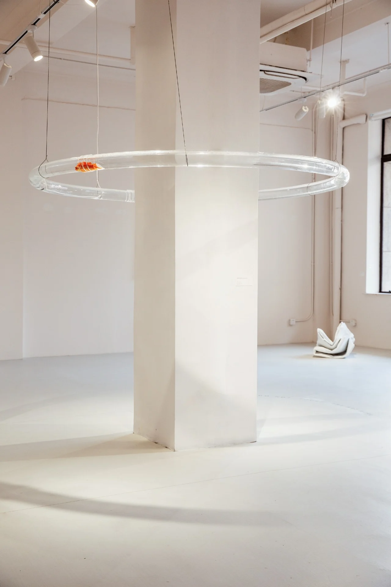
03 / Our ongoing exploration
Spiritual
Presence.
灵性的存在
Plants. Light. The world within.
Since 2024, Spiritual Presence has brought contemporary art into immersive natural settings. Through women's perspectives, it explores inner life, ecological connection and the possibility of finding ourselves in something beyond ourselves.
Enter the exhibition04 / The foundation
Small gestures.
Wider worlds.
Art is not apart from life.
It is a way of taking part.
The Parrot was founded by Iris Yu in Shanghai in 2018. The establishment of its Hong Kong foundation in 2024 marked a shift from a permanent gallery to an open, project-based way of working.
We support artists, designers and curators through exhibitions, creative exchange and public-interest programmes. Our practice brings together cultural heritage, sustainable design and the social possibilities of art.
The parrot is our symbol of persistent care and connection: a small voice that keeps responding to the world, crossing boundaries and bringing different perspectives together.
Art for a shared future- 2018
Shanghai beginnings
A historic villa on Yuqing Road. A space for art and design to meet.
- 2023
A chapter on the Bund
Exhibitions and cultural encounters in the Brunner Building.
- 2024
An open foundation
Established in Hong Kong. Spiritual Presence begins.
- 2025
A wider conversation
A New York liaison office connects new perspectives.